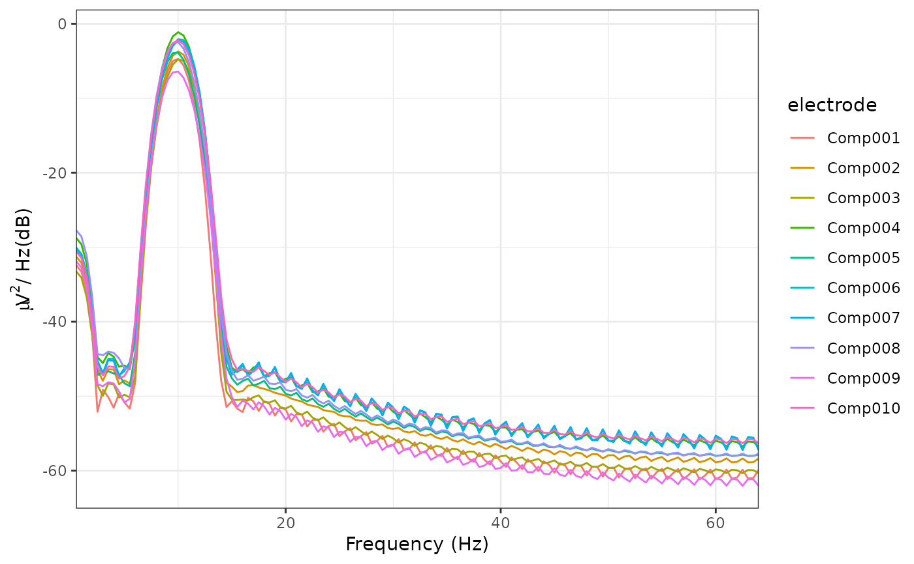
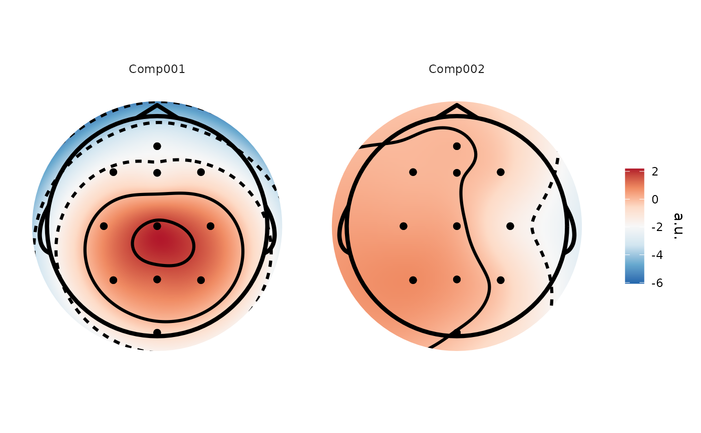
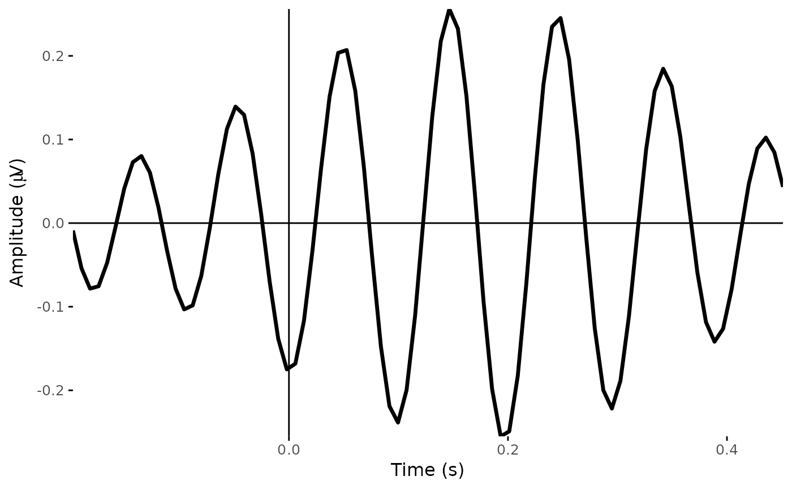
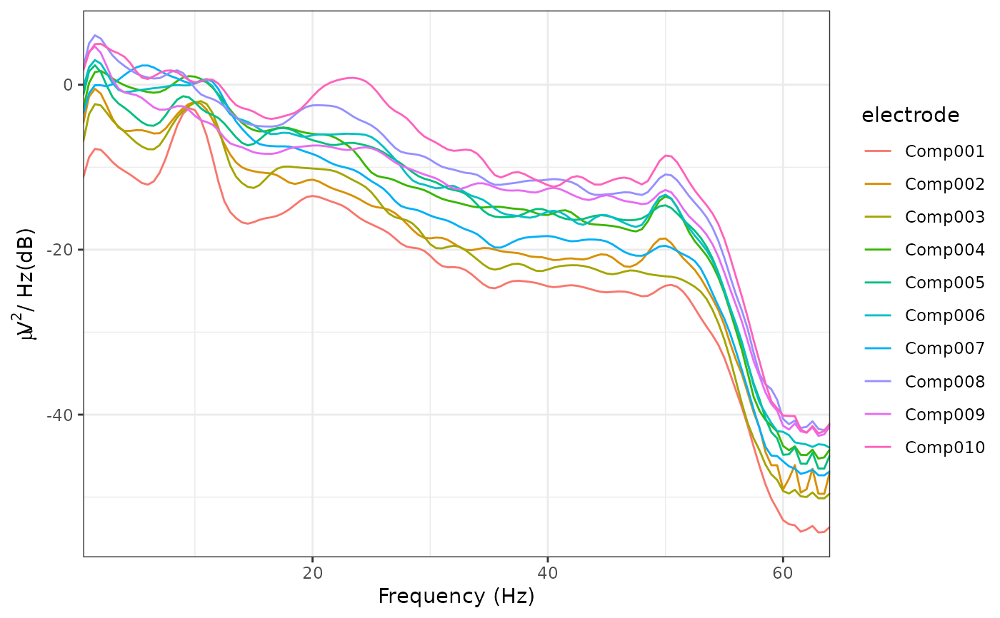
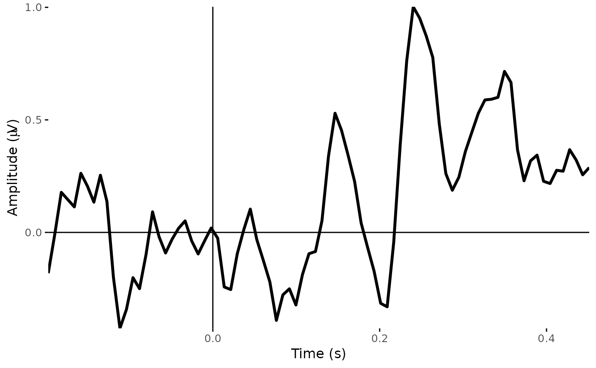

Generalized eigenvalue decomposition based methods for EEG data
Source:R/signal_decomposition.R
eeg_decompose.RdImplements a selection of Generalized Eigenvalue based decomposition methods for EEG signals. Intended for isolating oscillations at specified frequencies, decomposing channel-based data into components reflecting distinct or combinations of sources of oscillatory signals. Currently, spatio-spectral decomposition (Nikulin, Nolte, & Curio, 2011) and Rhythmic Entrainment Source Separation (Cohen & Gulbinate, 2017) are implemented. The key difference between the two is that the former returns the results of the data-derived spatial filters applied to the bandpass-filtered "signal" data, whereas the latter returns the results of the filters applied to the original, broadband data.
Usage
eeg_decompose(data, ...)
# S3 method for class 'eeg_epochs'
eeg_decompose(
data,
sig_range,
noise_range,
method = c("ssd", "ress"),
verbose = TRUE,
order = 2,
...
)Arguments
- data
An
eeg_epochsobject- ...
Additional parameters
- sig_range
Vector with two inputs, the lower and upper bounds of the frequency range of interest
- noise_range
Range of frequencies to be considered noise (e.g. bounds of flanker frequencies)
- method
Type of decomposition to apply. Defaults to "ssd"
- verbose
Informative messages printed to console. Defaults to TRUE.
- order
Filter order for filter applied to signal/noise
References
Cohen, M. X., & Gulbinate, R. (2017). Rhythmic entrainment source separation: Optimizing analyses of neural responses to rhythmic sensory stimulation. NeuroImage, 147, 43-56. https://doi.org/10.1016/j.neuroimage.2016.11.036
Haufe, S., Dähne, S., & Nikulin, V. V. (2014). Dimensionality reduction for the analysis of brain oscillations. NeuroImage, 101, 583–597. https://doi.org/10.1016/j.neuroimage.2014.06.073
Nikulin, V. V., Nolte, G., & Curio, G. (2011). A novel method for reliable and fast extraction of neuronal EEG/MEG oscillations on the basis of spatio-spectral decomposition. NeuroImage, 55(4), 1528–1535. https://doi.org/10.1016/j.neuroimage.2011.01.057
See also
Other decompositions:
run_ICA()
Author
Matt Craddock matt@mattcraddock.com
Examples
# The default method is Spatio-Spectral Decomposition, which returns
# spatially and temporally filtered source timecourses.
decomposed <-
eeg_decompose(demo_epochs,
sig_range = c(9, 11),
noise_range = c(8, 12),
method = "ssd")
#> Performing ssd...
#> Band-pass IIR filter from 9 - 11 Hz
#> Effective filter order: 4 (two-pass)
#> Removing channel means per epoch...
#> Band-pass IIR filter from 8 - 12 Hz
#> Effective filter order: 4 (two-pass)
#> Removing channel means per epoch...
#> Band-stop IIR filter from 8.5 - 11.5 Hz.
#> Effective filter order: 4 (two-pass)
#> Removing channel means per epoch...
#> Input data is not full rank; returning 10components
plot_psd(decomposed)
#> Removing channel means per epoch...
#> Computing Power Spectral Density using Welch's method.
#> FFT length: 256
#> Segment length: 84
#> Overlapping points: 42 (50% overlap)

# We can plot the spatial filters using `topoplot()`
topoplot(decomposed, 1:2)
#> Plotting 2 components
#> Using electrode locations from data.
#> Plotting head r 95 mm

plot_timecourse(decomposed, 1)
#> Creating epochs based on combinations of variables: epoch_label participant_id

# method = "ress" returns spatially but not temporally filtered timecourses.
with_RESS <-
eeg_decompose(demo_epochs,
sig_range = c(9, 11),
noise_range = c(8, 12),
method = "ress")
#> Performing ress...
#> Band-pass IIR filter from 9 - 11 Hz
#> Effective filter order: 4 (two-pass)
#> Removing channel means per epoch...
#> Band-pass IIR filter from 8 - 12 Hz
#> Effective filter order: 4 (two-pass)
#> Removing channel means per epoch...
#> Band-stop IIR filter from 8.5 - 11.5 Hz.
#> Effective filter order: 4 (two-pass)
#> Removing channel means per epoch...
#> Input data is not full rank; returning 10components
plot_psd(with_RESS)
#> Removing channel means per epoch...
#> Computing Power Spectral Density using Welch's method.
#> FFT length: 256
#> Segment length: 84
#> Overlapping points: 42 (50% overlap)

# The topographical plots are identical to those using "ssd", as the
# spatial filters are the same.
topoplot(with_RESS, 1:2)
#> Plotting 2 components
#> Using electrode locations from data.
#> Plotting head r 95 mm
plot_timecourse(with_RESS, 1)
#> Creating epochs based on combinations of variables: epoch_label participant_id
